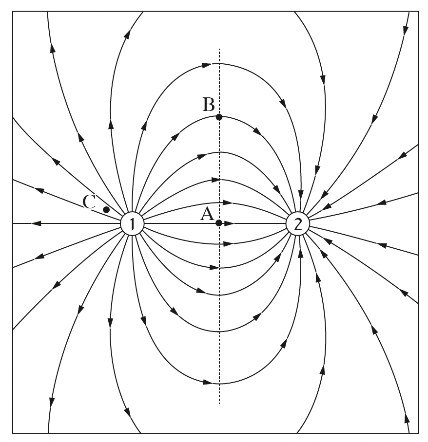

שאלה 1
לפניכם איור של מערכת ובה שני מטענים חשמליים, מטען 1 ומטען 2, הנמצאים בריק, וקווי השדה החשמלי של המערכת. בשאלה זו האנרגייה הפוטנציאלית החשמלית באין-סוף היא אפס.

הגדירו את המושג "קו שדה חשמלי". (5 נקודות)
על פי האיור, הסבירו מדוע המטענים שווים בערכם המוחלט. (4 נקודות)
הנקודה A היא אמצע הקטע המחבר את שני המטענים.
האם עוצמת השדה של מערכת המטענים בנקודה A היא אפס? הסבירו את תשובתכם.
האם הפוטנציאל החשמלי בנקודה A הוא אפס? הסבירו את תשובתכם.
(8 נקודות)
הנקודה B נמצאת על האנך האמצעי לקטע המחבר את שני המטענים.
אילו היו מציבים מטען נקודתי שלילי בנקודה B, מהו הכיוון של הכוח החשמלי שהיה פועל על המטען בנקודה זו? נמקו את תשובתכם. (4 1/3 נקודות)
היכן עוצמת (גודל) השדה החשמלי גדולה יותר - בנקודה A או בנקודה C? נמקו את תשובתכם. (4 נקודות)
נתון: הערך המוחלט של כל אחד משני המטענים הוא 10-8C, והמרחק ביניהם 6 ס"מ.
חשבו את האנרגייה הפוטנציאלית החשמלית של מערכת המטענים (ביחס לאין-סוף). (8 נקודות)